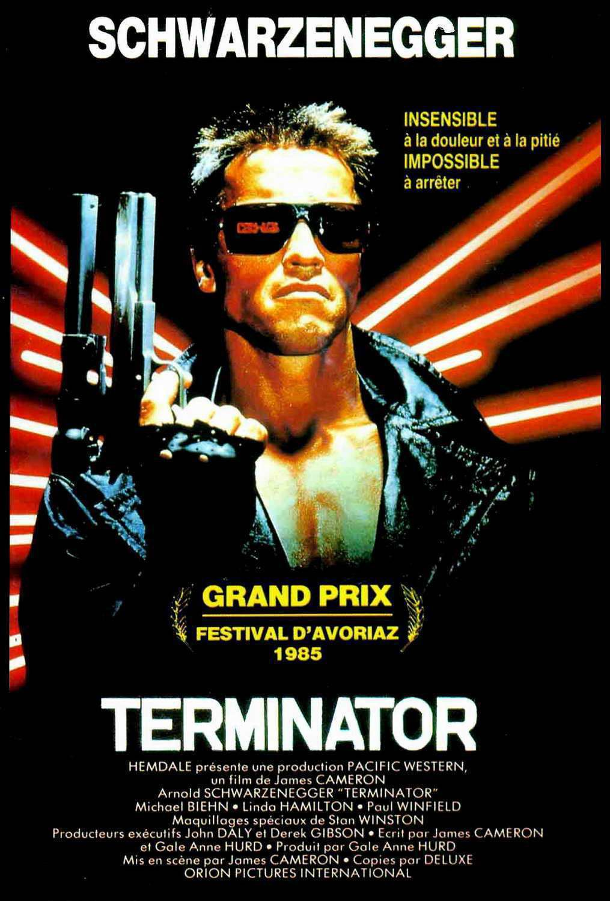
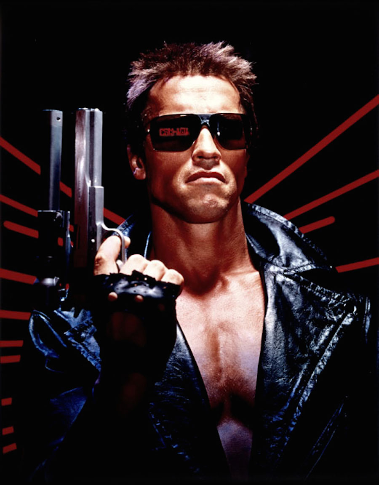

SCHWARZENEGGER
INSENSIBLE
à la douleur et à la pitié
IMPOSSIBLE
à arrêter
GRAND PRIX
FESTIVAL D'AVORIAZ
1985
TERMINATOR
HEMDALE présente une production PACIFIC WESTERN,
un film de James CAMERON
Arnold SCHWARZENEGGER "TERMINATOR"
Michael BIEHN • Linda HAMILTON • Paul WINFIELD
Maquillages spéciaux de Stan
WINSTON
Producteurs exécutifs John DALY et Derek GIBSON • Ecrit par James CAMERON
et Gale ANne HURD • Produit par Gale Anne HURD
Mis en scène par James CAMERON • Copies par DELUXE
ORION PICTURES INTERNATIONAL